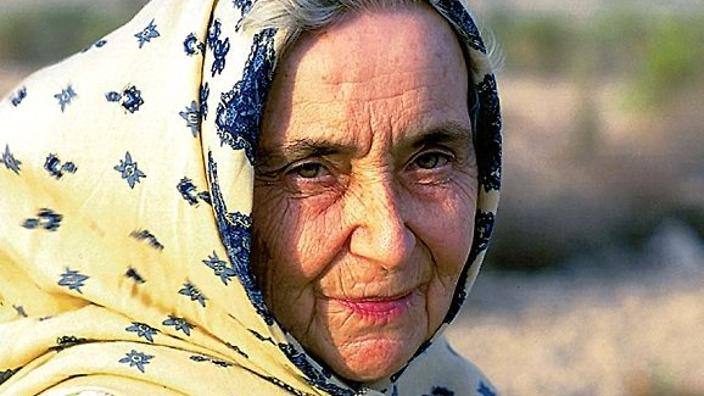

Ruth Pfau
Pakistan's 'mother of leprosy patients'

Dr Ruth Pfau in 2004
"If it doesn't hit you the first time,I don't think it will ever hit you"
-Mother Teresa of Pakistan,Ruth Pafu
Pafu was born on Sept. 9, 1929, in Leipzig, in eastern Germany, to Walter and Martha Pfau.As a teenager, she barely survived Allied bombing, which severely damaged her home during World War II.She escaped from the Soviet Occupation Zone in 1948 to study gynecology at the University of Mainz and in Marburg.At college, after meeting an elderly Christian concentration camp survivor who had devoted the rest of her life to preaching love and forgiveness and joined the Society of Daughters of the Heart of Mary in 1957.
Dr. Pfau joined the Marie Adelaide Leprosy Center, opened in 1956 in the Karachi slums and named for a founder of the order of nuns that ran it. She soon transformed it into the hub of a network of 157 medical centers that treated tens of thousands of Pakistanis infected with leprosy.
Accordig to Harald Meyer-Porzky, deputy chief executive of the German Leprosy and Tuberculosis Relief Foundation and a board member of the Ruth Pfau Foundation, Pfau had “enabled hundreds of thousands of people to live with dignity.” Pafu played a vital role in removing the stigma attatched to the healing of leprosy patients.
Pafu is an outstanding example of simplicity and hardwork.Even after she gave up the directorship of the center in 2006, she lived in a single room there, rising at 5 a.m. to fulfill her obligations as a nun and, beginning at 8 a.m., tending to patients and running interference with government bureaucrats.